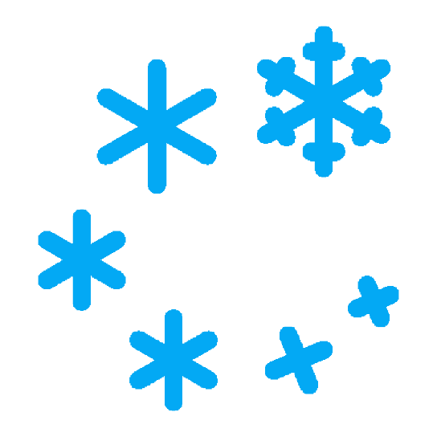

<div layout="column" style="height:100%;">
  <!--start tool bar -->
  <md-toolbar class="md-theme-indigo">
    <div class="md-toolbar-tools">
      <h3 flex="50" layout layout-align="end center">Main Title</h3>
      <h3 flex="50" layout layout-align="end center">Sub Title</h3>
    </div>
  </md-toolbar>
  <!--end tool bar-->
  <md-sidenav-container layout="row" flex>  
  <!--start side nav-->
    <md-sidenav name="left" [style]="hasMedia('gt-sm') ? 'side' : 'over'">
    <!--start tool bar -->
      <md-toolbar class="md-theme-indigo">
        <h1 class="md-toolbar-tools">Sidenav Left</h1>
      </md-toolbar>
    <!--end tool bar-->
      
      <md-content layout-padding>
        <button md-raised-button (click)="close('left')" class="md-primary" hide-gt-md>
          Close Sidenav Left
        </button>
        <p hide-md show-gt-md>
          This sidenav is locked open on your device. To go back to the default behavior,
          narrow your display.
        </p>
      </md-content>
    </md-sidenav>
    <!--end side nav-->
    <md-content flex layout-padding>      
      <div layout="column" layout-align="top center">
        <!--Start card first row -->
        <div layout-sm="column" layout-gt-sm="row">
          
          <!--Indoor Temperature-->
          <md-card flex-sm="100" flex-gt-sm="33">
            <md-card-header>
              <md-card-header-text>
                <span class="md-title">Indoor Temperature</span>
              </md-card-header-text>
            </md-card-header>
            <md-card-content>
              <div layout="row" style="height:80px;" layout-align="start end">
                <div flex="100" style="font-size:350%;"><temperature></temperature></div>
              </div>
            </md-card-content>
          </md-card>
          
          <!--Outside Temperature-->
          <md-card flex-sm="100" flex-gt-sm="33">
            <md-card-header>
              <md-card-header-text>
                <span class="md-title">Outside Temperature</span>
              </md-card-header-text>
            </md-card-header>
            <md-card-content>
                <weather></weather>
            </md-card-content>
          </md-card>
          
          <!--Weather Information-->
          <md-card flex-sm="100" flex-gt-sm="33">
            
            <md-card-content>
              <div layout="row" style="height:24px;" layout-align="start end">
                <div flex="50" style="font-size:100%;">Snow</div>
                <div flex="50" style="font-size:100%;">
                  Chance rain 40%
                </div>
              </div>
            </md-card-content>
          </md-card>

        </div>
        <!--End card first row-->
      
        <div flex="100" layout="row" layout layout-align="center center">
          <div flex="50">
            <button md-raised-button (click)="open('left')"
                    class="md-primary" hide-gt-md>
              Toggle left
            </button>
          </div>
        </div>
      </div>
    </md-content>
  </md-sidenav-container>
</div>